Воронка продаж для склада в Битрикс24 помогает управлять процессом продаж с учётом складских операций, таких как отгрузка товаров и создание накладных. Рассмотрим настройку на примере воронки для кондитерского цеха, где ключевыми являются накладные и привязка к складу.
🛠️ Основные шаги настройки воронки
Настройка воронки для склада включает четыре основных этапа:
Добавление полей в сделку.
Создание этапов воронки.
Настройка роботов для автоматизации.
Создание документов (при необходимости).
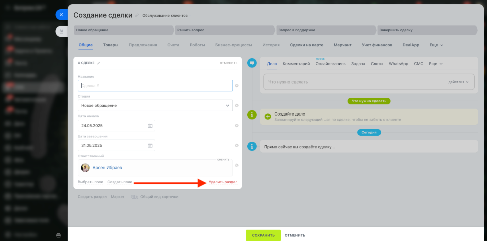
Обзор этапов настройки воронки для склада
📋 Настройка полей в сделке
Поля в сделке зависят от потребностей предприятия. Для склада кондитерского цеха добавим следующие поля (системные поля уже существуют в Битрикс24 и не требуют создания):
Раздел «О сделке»
Название — системное поле.
Сумма и валюта — системное поле.
Клиент — системное поле.
Товары — системное поле, привязка к каталогу.
Дата доставки — пользовательское поле, тип «Дата».
Адрес клиента (доставки) — пользовательское поле, тип «Строка».
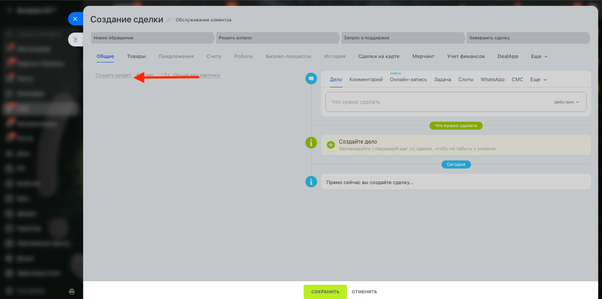
Добавление полей в раздел «О сделке»
Раздел «Оплата»
Способ оплаты — пользовательское поле, тип «Список».
Дата оплаты — пользовательское поле, тип «Дата».
Чек об оплате — пользовательское поле, тип «Файл».
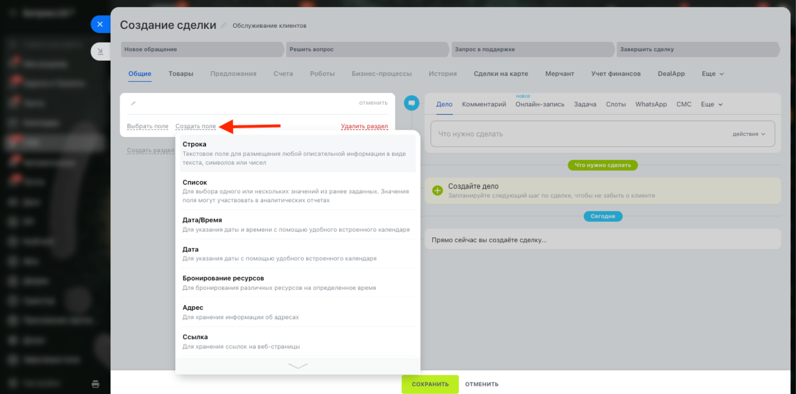
Добавление полей в раздел «Оплата»
Как создать поля
Следуйте этим шагам для настройки полей:
Откройте раздел CRM в Битрикс24.
Нажмите зелёную кнопку «Создать».
Удалите ненужные разделы: прокрутите вниз и нажмите «Удалить раздел».
Создайте новый раздел: нажмите «Создать раздел».
Добавьте поля: нажмите «Создать поле» и настройте перечисленные выше поля.
Для системных полей нажмите «Выбрать поле», найдите нужное поле, отметьте галочкой и нажмите «Выбрать».
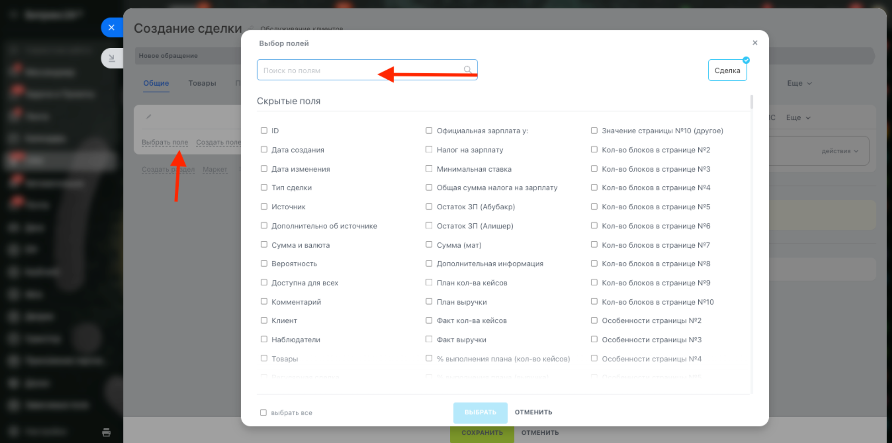
Процесс создания пользовательских полей
✅ Поля настроены и готовы для работы со сделками.
📊 Настройка этапов воронки
Для склада создадим две воронки, так как в Битрикс24 нельзя настроить отгрузку товара на конкретной стадии внутри одной воронки.
Воронка 1: «Воронка продаж»
Этапы:
Новая
Предзаказ
Собран
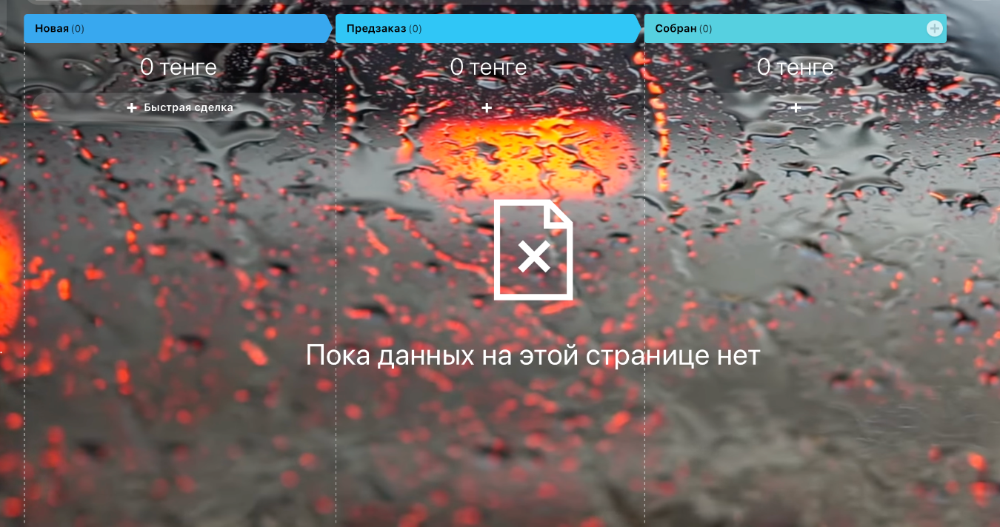
Этапы воронки «Воронка продаж»
Воронка 2: «Оплата»
Этапы:
Доставлено
Просроченная оплата
Оплачено
Проконтролировано
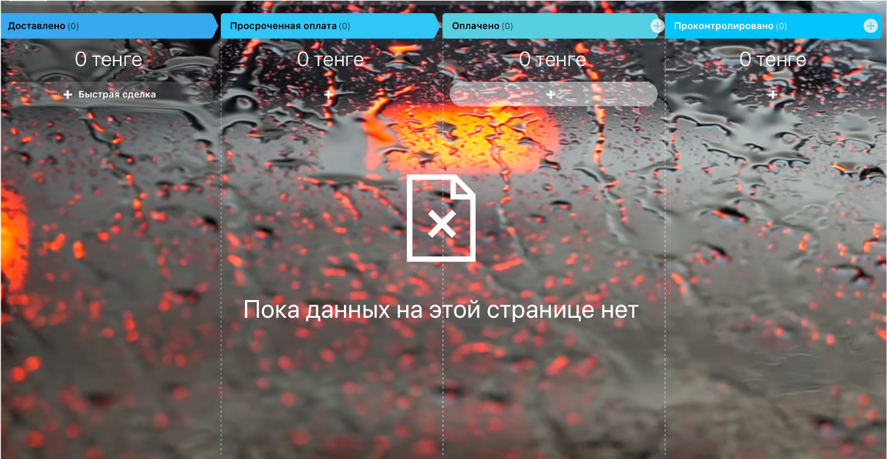
Этапы воронки «Оплата»
✅ Этапы настроены для управления продажами и оплатой.
🤖 Настройка роботов
Роботы автоматизируют процессы на каждом этапе воронки. Настроим их для обеих воронок.
Воронка «Воронка продаж»
Этап «Новая»
Робот 1: Изменить элемент — Изменяет поле «Адрес клиента», копируя значение из поля «Адрес» сущности «Компания».
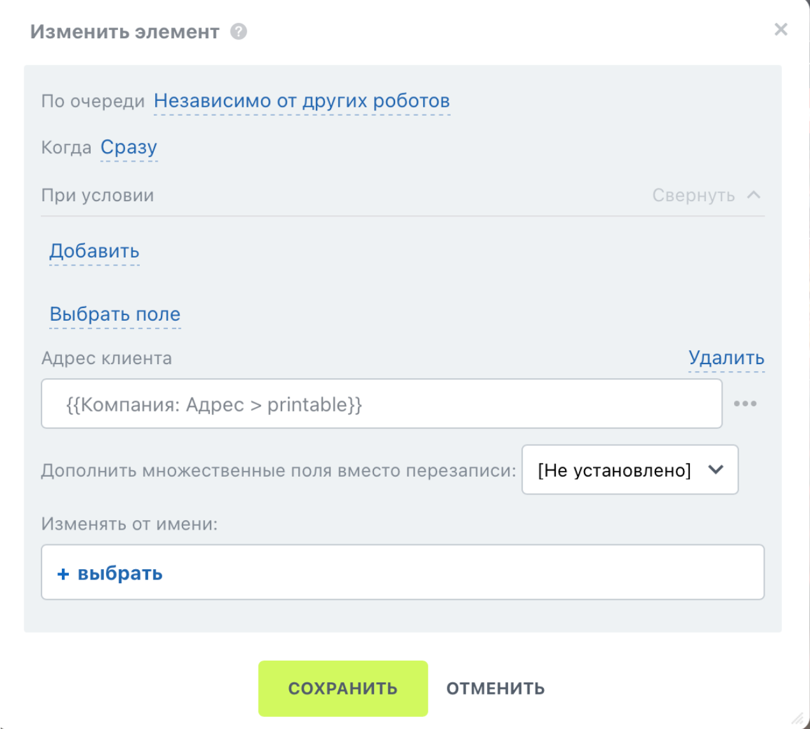
Настройка робота «Изменить элемент» на этапе «Новая»
Робот 2: Сменить стадию — Переводит сделку на стадию «Предзаказ» с условием: «Дата доставки» не равна текущей дате.
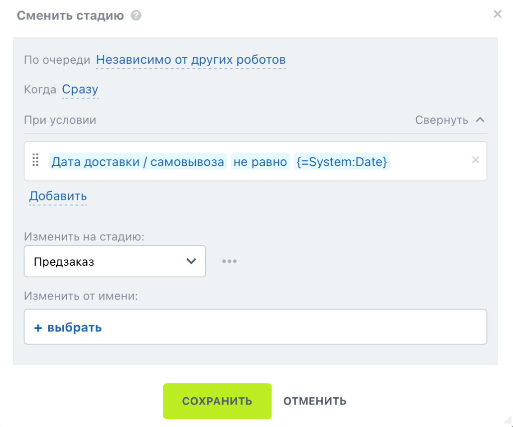
Настройка робота «Сменить стадию» на этапе «Новая»
Робот 3: Создать документ — Создаёт документ (например, накладную) на основе шаблона. Укажите нужные поля и выберите реквизиты вашей компании.
Настройка робота «Создать документ» на этапе «Новая»
Робот 4: Поставить задачу — Создаёт задачу для кладовщика на сбор заказа. Прикрепите созданный документ (накладную): нажмите «…», выберите «Создать документ» в разделе «Роботы», выберите формат файла. Установите крайний срок, в «Дополнительно» включите «Приостановить процесс на время выполнения задачи» и, при необходимости, снимите галочку «Проконтролировать задачу после завершения».
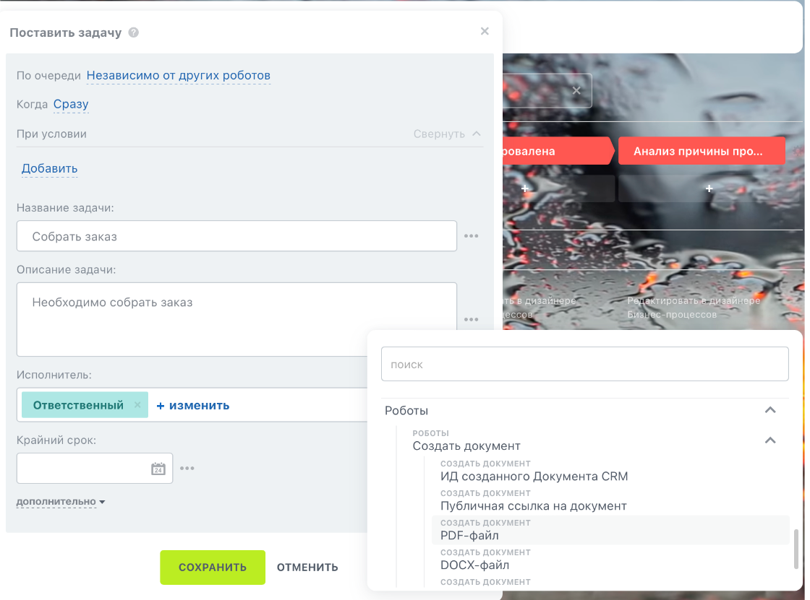
Настройка задачи для кладовщика на этапе «Новая»
Робот 5: Сменить стадию — После предыдущего робота переводит сделку на стадию «Собран».
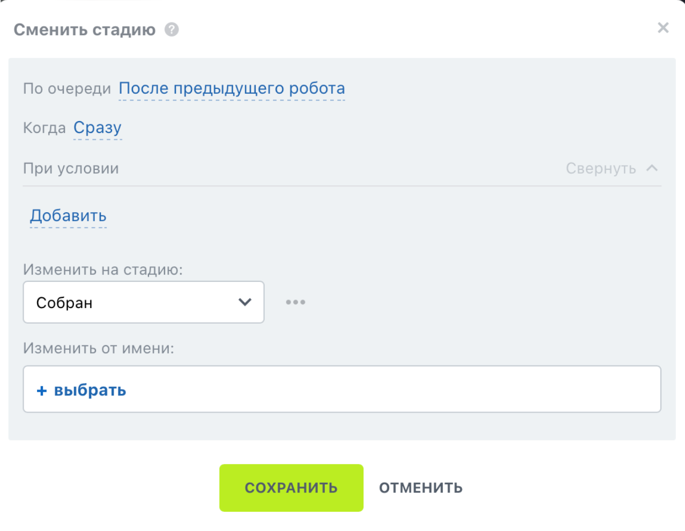
Перевод сделки на стадию «Собран»
Этап «Предзаказ»
Робот 1: Создать документ — Создаёт документ (например, накладную) для этапа «Предзаказ».
Робот 2: Поставить задачу — Создаёт задачу с временем срабатывания «Дата доставки». Настройки аналогичны предыдущему этапу.
Робот 3: Сменить стадию — Переводит сделку на стадию «Собран» после выполнения задачи.
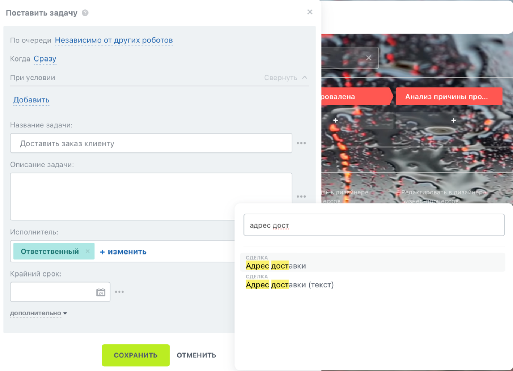
Настройка роботов на этапе «Предзаказ»
Этап «Собран»
Робот 1: Поставить задачу — Создаёт задачу для курьера с описанием, включающим поле «Адрес доставки». В «Дополнительно» включите «Приостановить процесс на время выполнения задачи» и, при необходимости, снимите галочку «Проконтролировать задачу после завершения».
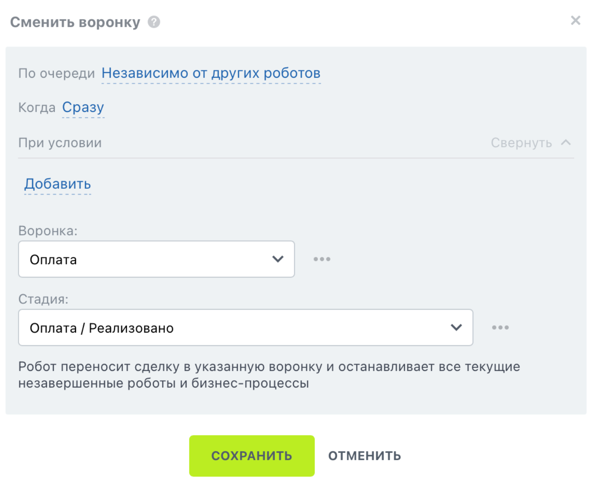
Настройка задачи для курьера на этапе «Собран»
Робот 2: Сменить стадию — После выполнения задачи переводит сделку на стадию «Сделка успешна».
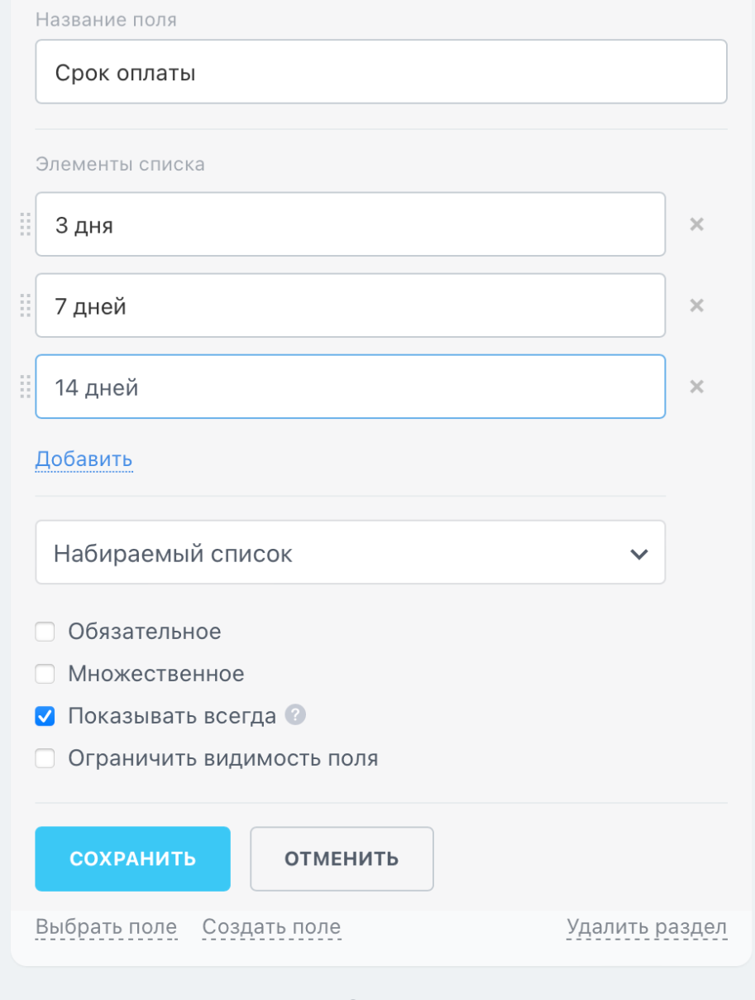
Перевод на стадию «Сделка успешна»
Этап «Сделка успешна»
Робот 1: Сменить воронку — Переводит сделку в воронку «Оплата» на первую стадию («Доставлено»).
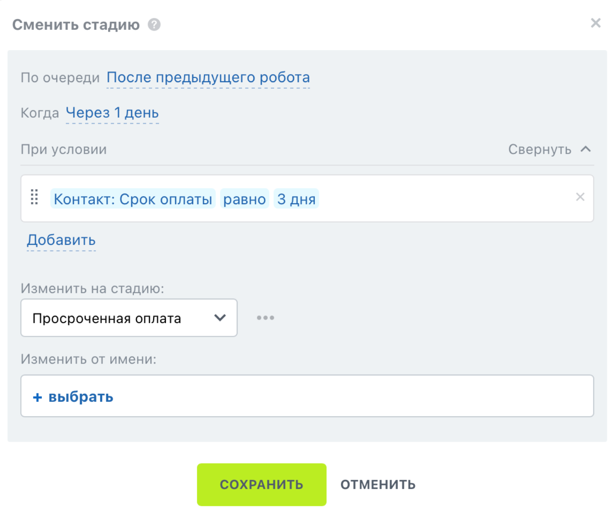
Перевод сделки в воронку «Оплата»
💸 Настройка воронки «Оплата»
Воронка «Оплата» управляет процессом оплаты и контроля, включая обработку просроченных платежей.
Подготовка: Настройка поля в сущности «Компания»
Для автоматизации просрочек добавим поле в сущности «Компания»:
Перейдите в раздел «Компании».
Создайте поле «Срок оплаты» (тип «Список»).
Добавьте значения: 3 дня, 7 дней, 14 дней (или другие сроки, принятые в вашей компании).
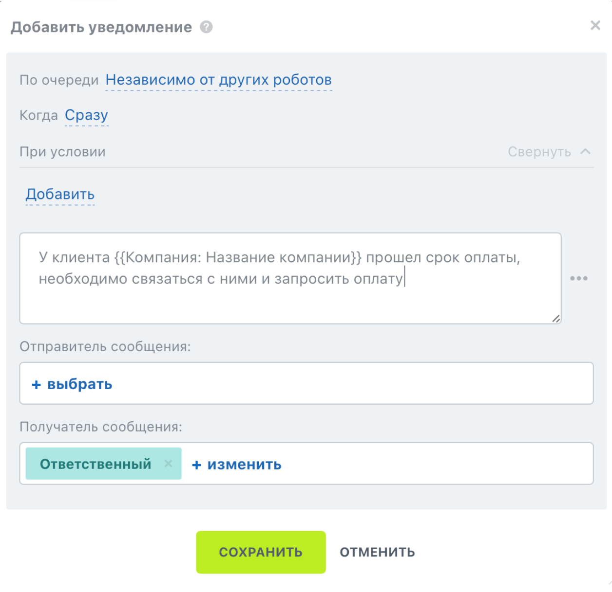
Создание поля «Срок оплаты» в сущности «Компания»
Этап «Доставлено»
Настройте роботов для контроля сроков оплаты:
Робот: Сменить стадию — Переводит сделку на стадию «Просроченная оплата» через 4 дня после доставки, если «Срок оплаты» компании равен 3 дня. Повторите для сроков 7 и 14 дней с соответствующими интервалами (8 дней, 15 дней).
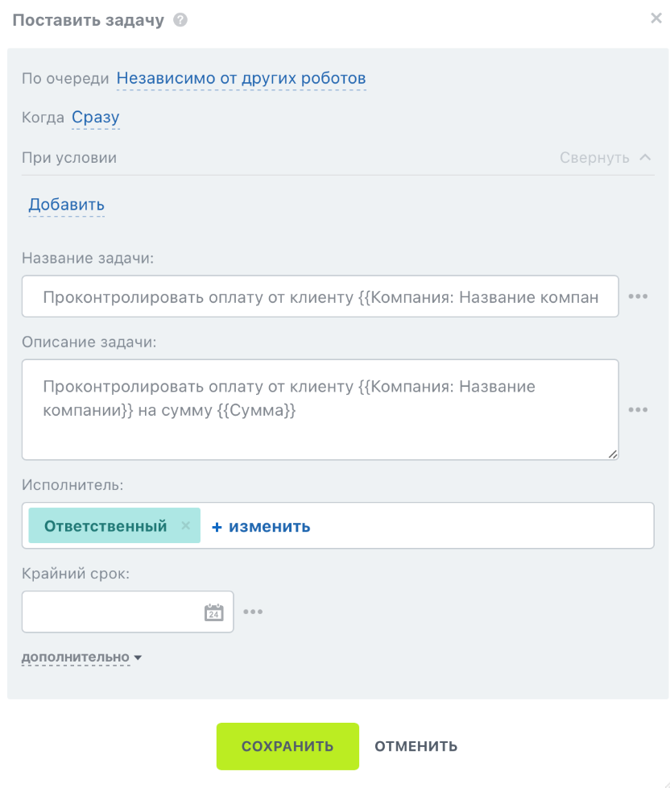
Настройка робота для контроля сроков оплаты
Этап «Просроченная оплата»
Робот: Уведомление — Отправляет уведомление ответственному менеджеру о просрочке оплаты.
Этап «Оплачено»
Робот 1: Поставить задачу — Создаёт задачу для бухгалтера на контроль оплаты. В описание добавьте сумму сделки и название компании. В «Дополнительно» включите «Приостановить процесс на время выполнения задачи» и, при необходимости, снимите галочку «Проконтролировать задачу после завершения».
Робот 2: Сменить стадию — После выполнения задачи переводит сделку на стадию «Проконтролировано».
Этап «Проконтролировано»
Настройте права доступа в CRM, чтобы запретить изменение сделок на этом этапе.
✅ Воронка «Оплата» автоматизирует контроль платежей и завершение сделок.